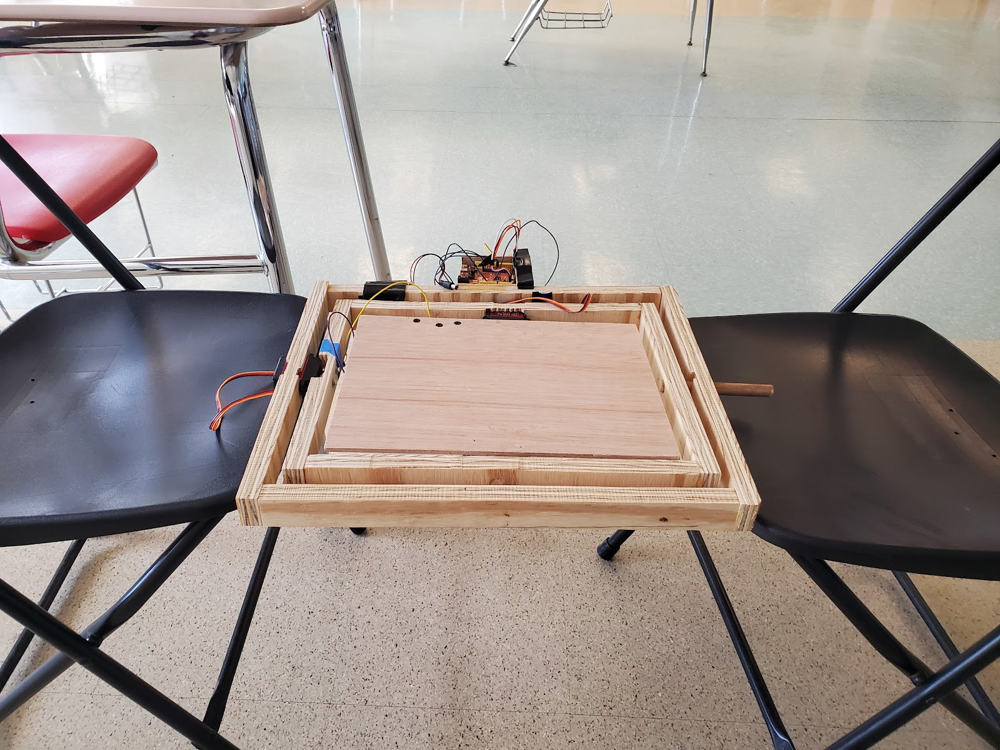

Our Journey
We've been working on the GyroTray for our whole high school careers. Starting in Freshman Year, we have contantly iterated to come up with what we have today.
You can visit our Freshman Year site Here.
Freshman year, we ideated and built an initial gyrotray prototype. This was a great proof of concept, but the tray was fragile, bulky, and was not nearly as stable as we had hoped.
You can visit our Sophomore Year site Here.
Sophomore year, we continued to prototype. Due to COVID-19 Restrictions on lab access, we did not get as far as we would have liked, and were left with underpowered servos and inadequete stabilization.
We now leverage CAD (Computer Aided Design) technology to iterate our physical tray quickly. Our tray uses wooden beams, 3D printed joints, and a fiberglass tray bottom.
Below is a picture of our original paper design from this year
We use high tourque servos connected to an arduino for angle control, and an MPU 6050 for sensing angular velocity.
Because of Gyrosensor drift, we had to use complex AI integration and filtering to determing the correct angle to turn to. our full code canbe found on our GitHub.